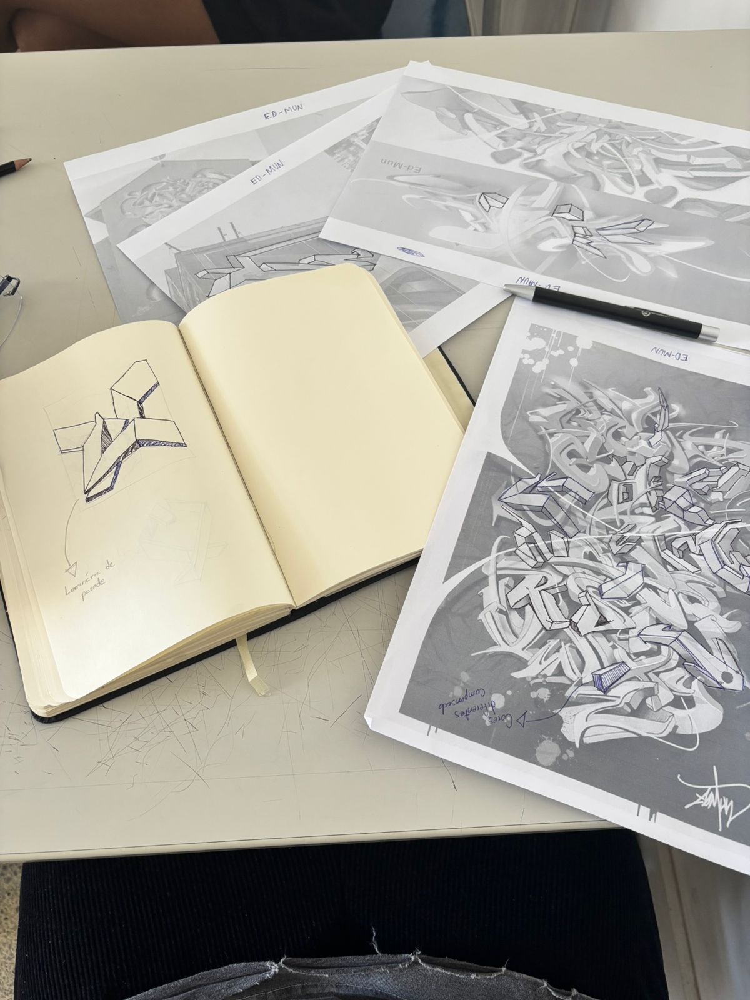
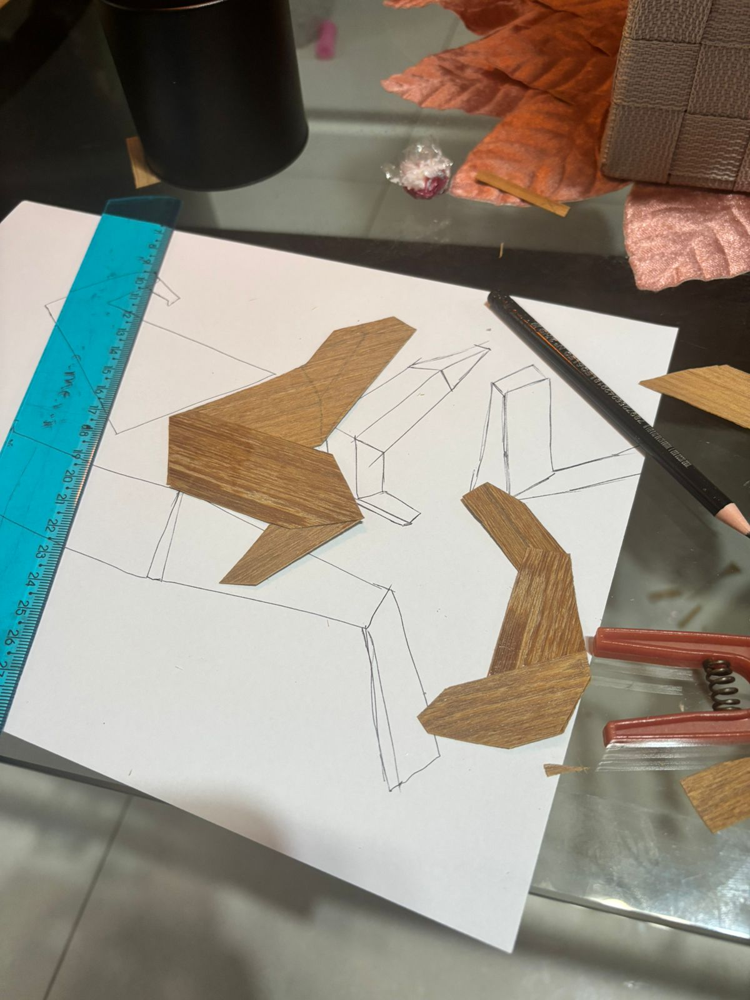
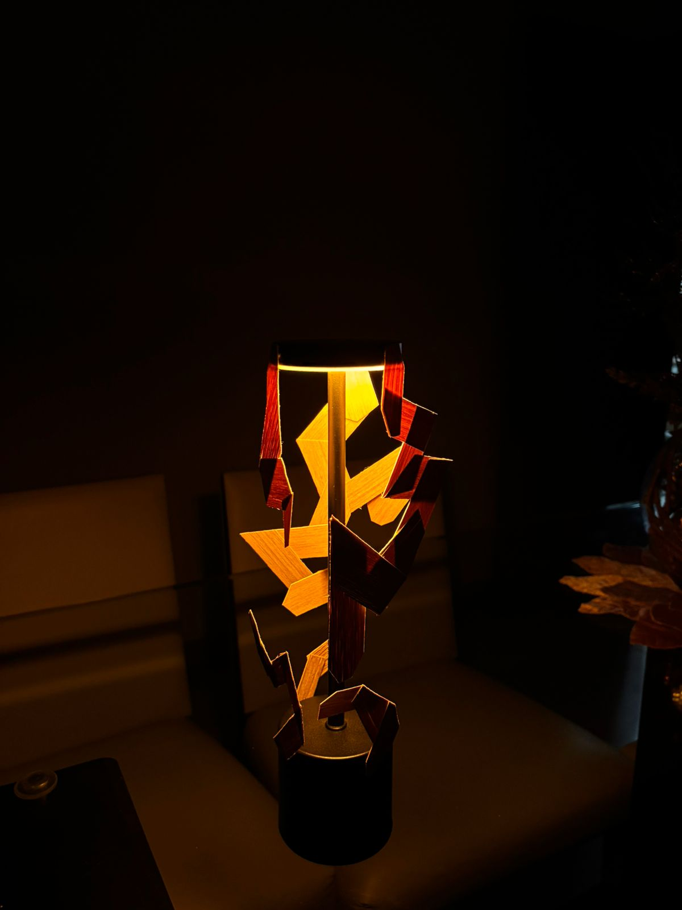

RUPTURA DA MATRIZ
2025LAMP CREATED USING MARQUETRY

During my final semester of college, I developed the "Ruptura" lamp in the strategic design practice!
The idea behind this work was to reinterpret an ancestral technique. Since then, I've conducted extensive research to try and discover a technique that would make sense to work with differently within my portfolio.
I chose marquetry as the technique for my project. Marquetry is an ancient art of creating designs and patterns on surfaces (usually wood) by inlaying pieces of materials such as woods of different colors, metals, mother-of-pearl, and stones, forming a decorative mosaic.
The technique involves cutting precise shapes and assembling them with patience and skill, resulting in furniture, paintings, and objects of high aesthetic value, ranging from geometric designs to complex figures
Each artisan has a cultural background in marquetry techniques from their family, but each artisan uses a great deal of their own experience in each piece.
During my research, I felt a strong desire to work with something related to street culture, especially graffiti, which carries a strong personal aesthetic, similar to the artisans of ancestral marquetry.
I researched a lot about some artists who could represent this technique very well, such as Edmun, an artist from Belo Horizonte who has already been internationally recognized for his art, and who, within this theme, I felt would fit perfectly!
That said, I created the concept of "rupture of the matrix," which comes a lot from this idea of breaking with the ancestral pattern without losing the connection with marquetry!
I managed to develop the lamp thinking a lot about Edmun's graffiti, and even from other points of view of the same lamp, I managed to make the collage of the veneers refer to the artist's graphic style.
I would like to thank Professor Camilo Belchior and Professor Maria Flávia who assisted me during the process, and I also leave here an invitation to see the exceptional work that Edmund does!
ORIGIN AND HISTORICAL CONTEXT
The technique originated during the Edo Period (1600-1868) in the Hakone region of Kanagawa Prefecture, Japan.
This area is the birthplace of Yosegi-zaiku and remains its main center today. Since 1984, Yosegi-zaiku has been recognized and registered by the Japanese government as an important cultural heritage craft, which protects and values the tradition.
Modern artisans, such as Kiyotaka Tsuyuki, from the fourth generation of the Tsuyuki Mokkousho workshop, work to preserve the tradition while adapting it to new products and contexts, ensuring that the knowledge is not lost.
Muku: In this technique, different types of wood are combined and glued together to form a block with a geometric pattern. This block is then carved or shaped to create three-dimensional objects, such as vases or bowls.
Zuku: This is the most popular technique and a hallmark of the Hakone region. The craftsman creates a block of wood with the desired pattern and then uses a special plane to slice it into thin sheets, almost like sheets of paper. These sheets are then glued to the surfaces of boxes, trays, or other pieces, creating a decorative finish.
The marquetry process in Brazil has particular characteristics that differentiate it from other traditions, such as the Japanese Yosegi-zaiku. The main distinction lies in the materials and artistic inspiration, which reflect the biodiversity and culture of the country.
TOPOMORPHOSIS
Topomorphosis by designer Heloísa Crocco uses the growth rings of trees and the textures of Amazonian wood as inspiration to create prints and patterns on different scales, from works of art to design products, with the aim of raising awareness about the preservation of biomes.
Crocco has been researching artisanal materials and techniques for decades, focusing on the reuse and application of designs inspired by nature.
The project extends to industry and the community, with partnerships in product lines and exhibitions that connect art to people's daily lives.
Observation of Nature: The artist researches the growth rings of trees, which are the marks left by time and the seasons. She saw in this natural "map" an inexhaustible source of patterns and textures.
Creation of Matrices: From the wood grain, she creates high-relief matrices, which are the basis of her work.
Reproduction on Different Media: These matrices are used to print patterns on various materials, such as handmade paper, fabrics, metals, and even surfboards. The result is a pattern that resembles an organic and geometric mosaic.
ATHOS BULCÃO
Athos Bulcão (1918-2008) was a renowned Brazilian visual artist, known for integrating art with modern architecture, mainly in Brasília, where he created colorful tile panels with geometric designs. Born in Rio de Janeiro, he became one of the most influential modernist artists in Brazil and is considered one of the pioneers of the capital. His works mark the landscape of Brasília and are a fundamental part of its identity.
Main characteristics of his work and career: Integration between art and architecture: Bulcão is celebrated for his work in tiles, applying geometric shapes and vibrant colors to buildings, creating a fusion between architecture and the visual arts. Brazilian Modernism: He is one of the most important artists of the modernist movement in Brazil, exploring themes such as national identity and the relationship between art, architecture, and climate.
CONCEPT
The main idea would be to work with the concept of a Timeline. Each piece becomes a wooden "canvas," where the artisan, in collaboration with the client, translates personal, family, or cultural narratives into complex designs. Key characteristics of his work and career. The name "Timelines" refers both to the wood grain (which marks the tree's age) and to the stories told on the product's surface. I arrived at the concept of "matrix rupture" by thinking about the concepts applied in the classroom. And from that, I decided to apply the concept of street graffiti, more specifically that of the world-renowned street artist Edmun.
SKETCHING

PROCESS AND TESTING

FINAL PROJECT

CREDITS
Prof. Carlos de Oliveira
Prof. Dr. Camilo e Prof. Dra Maria Flávia Vanucci Edmund Escola de Design da Universidade do Estado de Minas Gerais. Belo Horizonte, Brazil.